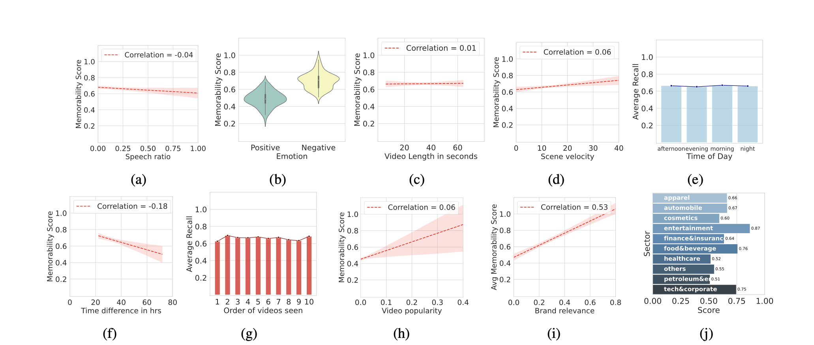

Long-Term Ad Memorability: Understanding and Generating Memorable Ads
WACV 2025
Get in touch with us at behavior-in-the-wild@googlegroups.com
- We release the first-ever long term ad memorability dataset, LAMBDA, featuring data from 1749 participants and 2205 ads across 276 brands.
- Introducing Henry, our novel model for predicting content memorability. Henry achieves state-of-the-art performance across major memorability datasets and demonstrates superior generalization in zero-shot scenarios on unseen datasets.
- We develop SEED (Self rEwarding mEmorability Modeling), a scalable method to generate high-quality memorable ads using automatically annotated data. Ads generated by our method show a 44% higher memorability score than the original ads.
Ad Generations by Henry
Take a look at some ad generations by Henry, visualized by Adobe Firefly. The raw ads generated in text are given in the textblock below each ad.
Raw generation
Raw generation
Abstract
Marketers spend billions of dollars on advertisements, but to what end? At purchase time, if customers cannot recognize the brand for which they saw an ad, the money spent on the ad is essentially wasted. Despite its importance in marketing, until now, there has been no study on the memorability of ads in the ML literature. All previous memorability studies have been conducted on short-term recall on specific content types like object and action videos. On the other hand, the advertising industry only cares about long-term memorability, and ads are almost always highly multimodal. Therefore, we release the first memorability dataset, LAMBDA, consisting of 1749 participants and 2205 ads covering 276 brands. Running statistical tests over different participant subpopulations and ad types, we find many interesting insights into what makes an ad memorable, e.g., fast-moving ads are more memorable than those with slower scenes; people who use ad-blockers remember a lower number of ads than those who don't. Next, we present a novel model, Henry, to predict the memorability of a content which achieves state-of-the-art performance across all prominent literature memorability datasets. Henry shows strong generalization performance with better results in 0-shot on unseen datasets. Finally, with the intent of memorable ad generation, we present a scalable method to build a high-quality memorable ad generation model by leveraging automatically annotated data. Our approach, SEED (Self rEwarding mEmorability Modeling), starts with a language model trained on LAMBDA as seed data and progressively trains the LLM to generate more memorable ads. We show that the generated advertisements have 44% higher memorability scores than the original ads. Further, we release a large-scale ad dataset, UltraLAMBDA, consisting of 5 million ads with their automatically-assigned memorability scores.
Interesting Trends in Memorability
- Food, entertainment, and tech industries have the most memorable ads.
- The length of an ad has minimal impact on its memorability.
- Ads with rapid scene transitions are more memorable than slower-paced counterparts.
- High-level features like object and scene semantics play a crucial role in ad recall. Ads showcasing human images are significantly more memorable than those featuring objects.
- Ads evoking negative emotions tend to stay in memory longer than those with positive sentiments.

Examples from LAMBDA
The score indicates the memorability of the ad, with 1.0 being the most memorable and 0.0 being the least memorable.
BibTeX
@misc{s2024longtermadmemorabilityunderstanding,
title={Long-Term Ad Memorability: Understanding and Generating Memorable Ads},
author={Harini S I au2 and Somesh Singh and Yaman K Singla and Aanisha Bhattacharyya and Veeky Baths and Changyou Chen and Rajiv Ratn Shah and Balaji Krishnamurthy},
year={2024},
eprint={2309.00378},
archivePrefix={arXiv},
primaryClass={cs.CL},
url={https://arxiv.org/abs/2309.00378}
}Terms Of Service
LAMBDA and UltraLAMBDA are sourced from brand videos available on YouTube, Facebook Ads, and CommonCrawl. The dataset annotations and video links for both LAMBDA and UltraLAMBDA will be released under the MIT License. The videos themselves are subject to the original creators' licenses. These datasets do not reveal any identities of the annotators or specific individuals. LAMBDA, being curated manually, ensures that no offensive videos are included; however, UltraLAMBDA, sourced from the internet, may contain noisier content. While the videos originate from brands, some brand content may be perceived as offensive by certain individuals.
Acknowledgement
We thank Adobe for their generous sponsorship. We thank the LLaMA team for giving us access to their models, and open-source projects, including Vicuna.